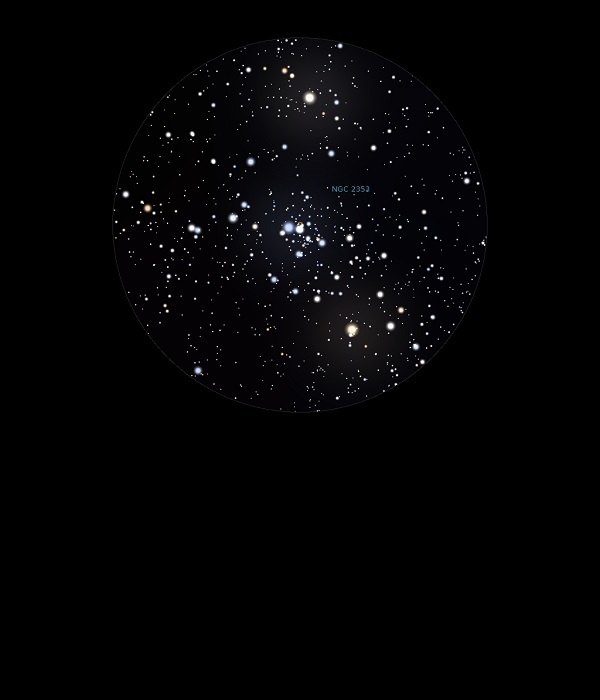

NGC 2353
Open
Cluster in Monoceros
NGC 2353
Mag 7.1
24/01/15
This
Open Cluster fits neatly into the FOV in 25mm with the very
blue Mag 6.0 star HIP 34999 at it's centre and HIP 34982 at
Mag 5.90 and HIP 35127 at Mag 5.95 at each side, contrasting
nicely as these two are very yellow